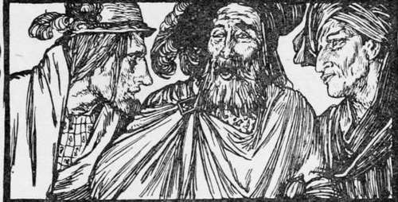

The Three Crows
Description
This section is from the book "Household Tales by Brothers Grimm", by Brothers Grimm. Also available from Amazon: Household Tales by Brothers Grimm.
The Three Crows
A band of soldiers came home from the wars; for peace had been made, and their king wanted their service no longer. One of them, whose name was Conrad, had saved a good deal of money out of his pay; for he did not spend all he earned in eating and drinking, as many others do. Now two of his comrades were great rogues, and they wanted to rob him of his money : however, they behaved outwardly towards him in a friendly way. "Comrade," said they to him one day, "why should we stay here, shut up in this town like prisoners, when you at any rate have earned enough to live upon for the rest of your days in peace and plenty, at home by your own fireside ? " They talked so often to him in this manner, that he at last said he would go and try his luck with them; but they all the time thought of nothing but how they should manage to steal away his money from him.
When they had gone a little way, the two rogues said, " We must go by the right-hand road, for that will take us quickest into another country, where we shall be safe." Now they knew all the while that what they were saying was untrue; and as soon as Conrad said, "No, that will take us straight back into the town we came from—we must keep on the left hand," they picked a quarrel with him, and said, "What do you give yourself airs for? you know nothing about it." Then they fell upon him and knocked him down, and beat him over the head till he was blind. And having taken all the money out of his pockets, they dragged him to a gallows-tree that stood hard by, bound him fast down at the foot of it, and went back into the town with the money. But the poor blind man did not know where he was; and he felt all around him, and finding that he was bound to a large beam of wood, thought it was a cross, and said, "After all, they have done kindly in leaving me under a cross; now Heaven will guard me."
When night came on, he heard something fluttering over his head. It turned out to be three crows that flew round and round, and at last perched upon the tree. By and by they began to talk together, and he heard one of them say, "Sister, what is the best news with you to-day?" "Oh! if men did but know all that we know!" said the other. "The princess is ill, and the king has vowed to marry her to any one who will cure her: but this none can do, for she will not be well until yonder blue flower is burned to ashes and swallowed by her." "Oh, indeed," said the other crow, "if men did but know what we know! To-night there will fall from heaven a dew of such power, that even a blind man, if he washed his eyes with it, would see again." And the third spoke, and said, " Oh ! if men knew what we know ! The flower is wanted but for one, the dew is wanted but for few; but there is a great dearth of water for all in the town. All the wells are dried up; and no one knows that they must take away the large square stone by the fountain in the market-place, and dig underneath it, and that then the finest water will spring up."
Conrad lay all this time quite quiet; and when the three crows had done talking, he heard them fluttering round again, and at last away they flew. Greatly wondering at what he had heard, and overjoyed at the thoughts of getting his sight, he tried with all his strength to break loose. At last he found himself free, and plucked some of the grass that grew beneath him, and washed his eyes with the dew that had fallen upon it. At once his eye-sight came to him again, and he saw, by the light of the moon and the stars, that he was beneath the gallows-tree, and not beneath a cross, as he had thought. Then he gathered together in a bottle as much of the dew as he could, to take away with him; and looked around till he saw the blue flower that grew close by; and when he had burned it he gathered up the ashes, and set out on his way towards the king's court.
When he reached the palace, he told the king he was come to cure the princess; and when he had given her the ashes and made her well, he claimed her for his wife, as the reward that was to be given. But the princess, looking upon him and seeing that his clothes were so shabby, had no mind to be his wife; and the king would not keep his word, but thought to get rid of him by saying, "Whoever wants to have the princess for his wife, must find enough water for the use of the town, where there is this summer a great dearth." Then the soldier went out, and told the people to take up the square stone by the fountain in the market-place, and to dig for water underneath ; and when they had done so, there came up a fine spring, that gave enough water for the whole town. So the king could no longer get off giving him his daughter; and as the princess began to think better of him, they were married, and lived very happily together after all.
Soon after, as he was walking one day through a field, he met his two wicked comrades who had treated him so basely. Though they did not know him, he knew them at once, and went up to them and said, " Look at me! I am your old comrade whom you beat and robbed and left blind ; Heaven has defeated your wicked wishes, and turned all the mischief which you brought upon me into good luck." When they heard this they fell at his feet, and begged for pardon; and as he had a very kind and good heart he forgave them, and took them to his palace, and gave them food and clothes. And he told them all that had happened to him, and how he had reached these honours. After they had heard the whole story they said to themselves, " Why should not we go and sit some night under the gallows? we may hear something that will bring us good luck, too."
Next night they stole away; and when they had sat under the tree a little while, they heard a fluttering noise over their heads ; and the three crows came and perched upon it. "Sisters," said one of them, "some one must have overheard us, for all the world is talking of the wonderful things that have happened ;—the princess is well; the flower has been plucked and burned ; a blind man has found his sight; and they have found the spring that gives water to the whole town. Let us look round, perhaps we may find some one skulking about; if we do, he shall rue the day."
Then they began fluttering about, and soon spied out the two men below, and flew at them in a rage, beating and pecking them in the face with their wings and beaks till they were quite blind, and lay half dead upon the ground, under the gallows-tree.
The next day passed over, and they did not return to the palace ; so Conrad began to wonder where they were, and went out the following morning in search of them, and at last he found them where they lay, dreadfully repaid for all their folly and baseness.
Continue to:
Tags
fairy tales, children's stories, brothers grimm, household tales